Project 1: Image Filtering and Hybrid Images
Hybrid images are generated by superimposing two images at two different spatial scales: The first image is obtained by filtering it with a low-pass filter, a gaussian filter in this case, and the second image is obtained by filtering a second image with a high-pass filter. The final hybrid image is composed by adding these two filtered images. The my_imfilter() in the python student code imitates the filter2D function in the OpenCV library.
How padding effects the image
I have performed padding so that after filtering the size of the image is not affected - The differences are very subtle in this case but it is interesting to note how padding that reflects the boundary pixels (leftmost) creates a more smoother blurred image as compared to zero padding that leaves an unecessary dark border around the image (2nd from left). Padding that takes the maximum (3rd from left) pixels from the edges highlights the outliers in the image borders and creates a discontinuity at the border. For the mean padding (4th from left) the discontinuity is less visible, but a halo can be seen along the boundary of the image. Hence for minimum discontinuity in the border and image I've used the "Reflect" padding.
 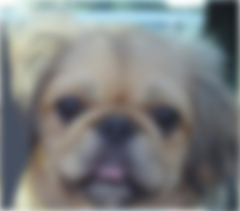
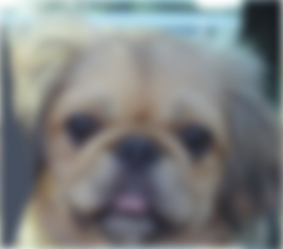
Python code for Image Padding
pad_w=int((filter.shape[0]-1)/2)
npad = ((pad_w, pad_w), (pad_w, pad_w), (0, 0))
padded_image=np.pad(image,pad_width=npad, mode='reflect')
Python Code for Hybrid Image
(1) my_imfilter() function
In this function I have simply looped through all the pixels in my image and performed a scalar dot product of each subset of the image array the filter array passes on. The resultant filtered image - is saved in the filtered_image array
for c in range(image.shape[2]):
for i in range(image.shape[0]):
for j in range(image.shape[1]):
filtered_image[i,j,c]=np.sum(np.multiply(padded_image[i:i+filter_size,j:j+filter_size,c],filter))
(2) create_hybrid_image() function
To get High Frequency Image, we simply subtract the low frequencies with the original image as shown below. The resultant Hybrid Image is the sum of the 2 low pass and high pass images. Note the resultant summed image is passed through the np.clip function to make sure the pixel values are between 0 and 1.
high_frequencies =image2-my_imfilter(image2,filter)
low_frequencies=my_imfilter(image1,filter)
hybrid_image=np.clip(low_frequencies+high_frequencies,0,1)
Test Results
In the below filter results, apart from the high pass and low pass filters, we have the sobel filter which is more of an edge detecting filter. The Laplacian filter is also an edge detection filter which higlights areas in the image of rapid intensity change. The main difference between the sobel and Laplace filter is that the sobel filter measures the gradient, wheras the laplace filter measures the change in gradient. Hence, the laplace filter is more sensitive to noise.
From left to right -> blur_image, high pass image, identity image, large blur image, sobel image, laplacian image
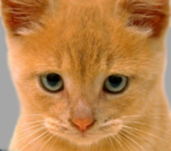 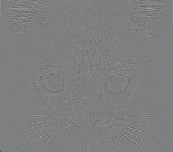 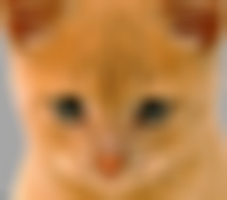
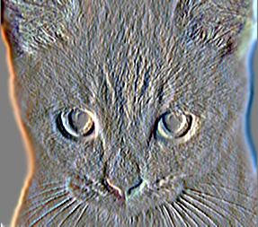
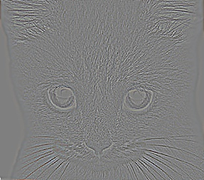
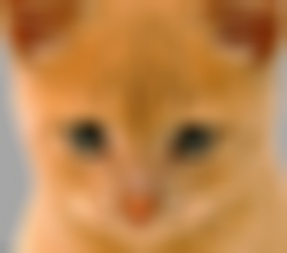
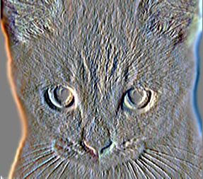
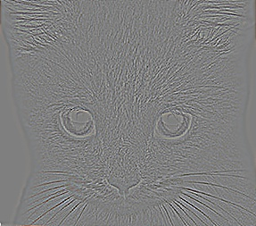
Final Results - 1
|
Cutoff Frequency=4 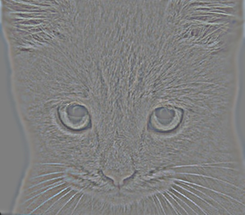 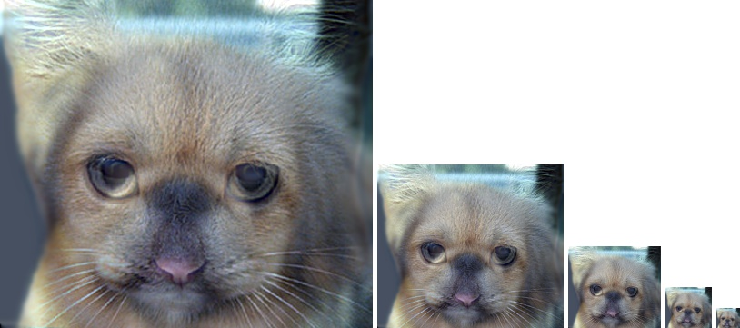. |
|
Cutoff Frequency=7  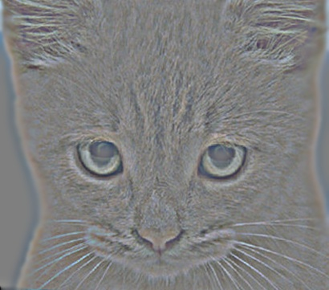
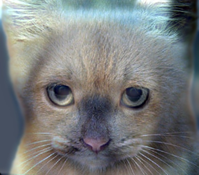
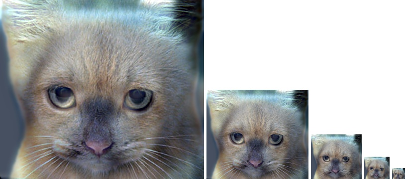
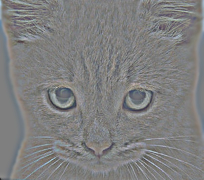
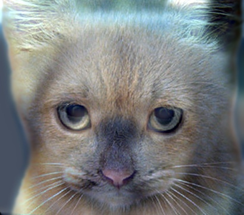
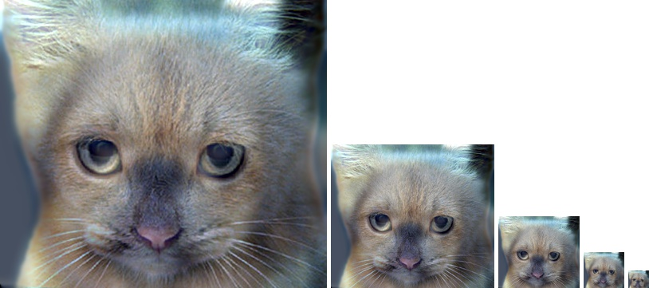
. |
|
Cutoff Frequency=10 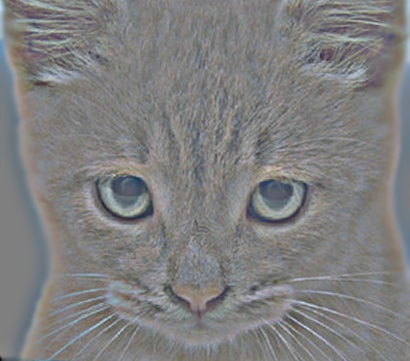. |
In the above results as we give a higher cutoff frequency, the higher frequency image in the Hybrid Image dominates. In the first set of results with cutoff frequency=4, we can begin seeing the dog in the hybrid image 2nd image in the Image scales, that is within a smaller distance. However for cutoff frequency 10, the dog image begins to appear as one moves much further away and the higher frequency image (the cat) dominates. The best results are obtained with cut off frequency=7